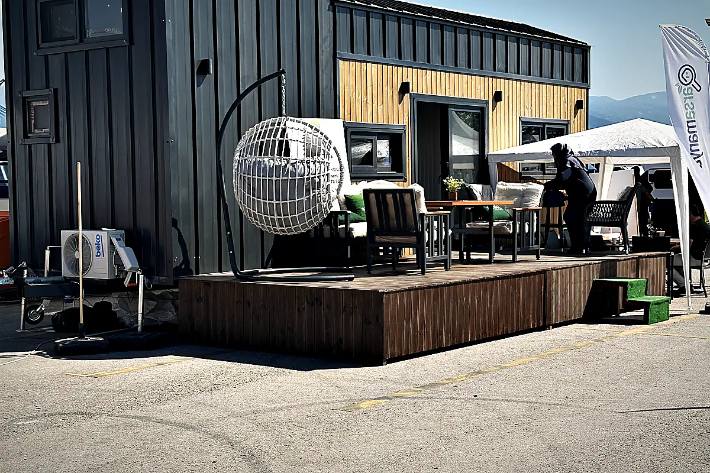

Tiny House für Campingplatz und Glamping
Auf einem Campingplatz ist ein Tiny House kein Wohnhaus, sondern ein Mietobjekt mit einer Platznummer. Es muss in die Platzordnung passen, an die vorhandene Erschließung anschließen, in der Nebensaison geliefert werden und sich über Übernachtungen rechnen. Das ändert fast jede Entscheidung, vom Grundriss bis zur Fassade.
Für Campingplätze und Glamping-Betreiber plant MODUNERA Tiny Houses als Mietobjekte: Grundriss für wechselnde Gäste, Fassade und Verglasung je Standort, Anschlüsse auf die vorhandene Stellplatz-Erschließung ausgelegt, mehrere Einheiten je Projekt gemeinsam geliefert. Die Platzordnung, die saisonalen Regeln und die Anforderungen der Behörde klärt der Betreiber; wir liefern die Unterlagen zum Haus.
Die Platzordnung entscheidet, bevor ein Modell gewählt wird
Jeder Campingplatz hat eine Platzordnung, und sie ist für ein Mietobjekt bindender als jede Modellbroschüre. Sie regelt typischerweise Abstände zwischen Objekten, zulässige Höhen, Fassadenfarben, ob eine Terrasse angebaut werden darf, wie entwässert wird und ob das Objekt im Winter stehen bleiben darf. Die Ordnung leitet sich aus der Campingplatzverordnung des jeweiligen Bundeslandes und aus der Genehmigung des Platzes ab, und sie unterscheidet sich von Platz zu Platz.
Deshalb beginnt ein Projekt bei uns mit dieser Ordnung, nicht mit einem Modell. Wer zuerst ein Modell wählt und dann feststellt, dass die Höhe oder der Abstand nicht passt, hat die Reihenfolge umgedreht. Wir fragen nach der Platzordnung, nach dem Lageplan der Stellplätze und nach dem, was die Behörde für den Platz genehmigt hat — und wählen dann das Modell, das hineinpasst.
Erschließung je Stellplatz: was vorhanden ist, bestimmt die Technik
Ein Stellplatz auf einem Campingplatz hat in der Regel einen Stromanschluss mit begrenzter Absicherung, oft einen Wasseranschluss und manchmal einen Abwasseranschluss. Die Leistung, die der Anschluss hergibt, entscheidet darüber, welche Heizung und welcher Warmwasserbereiter sinnvoll sind. Ein Haus, das für einen 32-Ampere-Hausanschluss geplant wurde, überfordert einen 16-Ampere-Stellplatz.
Wir legen Elektro, Wasser und Abwasser auf die Erschließung aus, die der Platz tatsächlich hat, und benennen vorab, was das für Heizung, Warmwasser und Kochfeld bedeutet. Wo kein Abwasseranschluss liegt, ist das eine Planungsfrage für den Betreiber, keine, die ein Haus allein lösen kann.
Grundriss für Gäste: anders als für Bewohner
Ein Mietobjekt wird jede Woche von anderen Menschen bewohnt und dazwischen gereinigt. Das verlangt ein Bad, das in wenigen Minuten sauber ist, ein Bett, das ohne Leiter erreichbar ist, Stauraum für Koffer statt für ein ganzes Leben, und Oberflächen, die Gäste nicht beschädigen. Ein Loft über einer Leiter ist für Bewohner reizvoll und für Gäste ab einem bestimmten Alter ein Ausschlusskriterium.
Die Möbel werden für diese Nutzung gezeichnet: Betten ebenerdig oder über einer festen Treppe, eine Küchenzeile, die für eine Woche reicht, ein Bad mit Duschkabine statt offener Dusche, Haken und Ablagen dort, wo Gäste sie suchen. Welche der acht Modelle für Gästebetrieb meistens infrage kommen, steht im Glamping-Leitfaden.
Lieferung außerhalb der Saison, mehrere Einheiten in einer Woche
Ein Campingplatz kann in der Hauptsaison keinen Tieflader auf dem Gelände gebrauchen. Die Lieferung mehrerer Einheiten wird deshalb als ein Vorhaben geplant: Route, Zufahrt zum Platz, Reihenfolge der Stellplätze, Kran oder Rangieren, Aufstellung und Ausrichtung auf den Stützen. Was in einer Woche im November erledigt wird, stört im Juli den Betrieb.
Der Weg aus der Fertigung nach Deutschland führt über die Straße und je nach Route über einen Ro-Ro- oder Fährabschnitt. Alle acht Modelle bleiben auf 2,55 m Grundbreite, damit der Transport ohne Sondergenehmigung für Überbreite möglich bleibt. Die letzte Zufahrt — Tore, Kurvenradien, Tragfähigkeit der Wege — prüfen wir mit dem Betreiber vor der Bestellung.
Vor der Anfrage klären
- Platzordnung und Lageplan der Stellplätze, auf denen die Einheiten stehen sollen
- Was die Behörde für den Platz genehmigt hat: Objektgröße, Höhe, Winterstandzeit
- Erschließung je Stellplatz: Absicherung des Stromanschlusses, Wasser, Abwasser
- Saisonzeiten und das Zeitfenster, in dem geliefert werden kann
- Zufahrt für einen Tieflader bis an den Stellplatz: Tore, Kurven, Untergrund
- Gewünschte Einheitenzahl und ob alle gleich oder in zwei Varianten sein sollen
Vertiefung in den bestehenden Leitfäden:
Schnelle Antworten, klare Grenzen.
Das regeln die Campingplatzverordnung des Bundeslandes, die Genehmigung des Platzes und die Platzordnung des Betreibers. Ob ein Objekt dieser Größe auf einem bestimmten Stellplatz zulässig ist, klärt der Betreiber mit der zuständigen Behörde. Wir liefern die technischen Angaben zum Haus, die dafür gebraucht werden.
Das hängt von der Genehmigung des Platzes und der Platzordnung ab, nicht vom Haus. Technisch ist eine Einheit für Ganzjahresbetrieb ausgelegt, wenn Dämmung, Heizung und frostsichere Wasserführung dafür gewählt werden — das wird je Standort entschieden.
Das wird je Projekt geplant. Entscheidend sind Zufahrt, Entladung, Reihenfolge und das Zeitfenster außerhalb der Saison. Nennen Sie in der Anfrage die gewünschte Zahl; der Zeitplan ergibt sich aus Fertigung und Route.
Preisindikationen ab Werk stehen auf den Modellseiten. Für ein Mietobjekt kommen Lieferung, Aufstellung, Anschlüsse und die Ausstattung für Gästebetrieb dazu; was sich über Übernachtungen rechnet, hängt von Auslastung und Saison ab und steht im Glamping-Leitfaden.
Eine Terrasse kann Teil der Konstruktion sein oder vor Ort gebaut werden; was zulässig ist, steht in der Platzordnung. Wir planen den Außenraum mit, weil er bei Glamping-Objekten einen großen Teil des Erlebnisses ausmacht.
Weitere Betreiberarten
Ferienpark & Resort
Gleiche Einheiten in Serie, auf Betreiberregeln und Nebenkosten gerechnet.
Zimmer außerhalb des HausesHotel & Naturhotel
Zusätzliche Zimmer im Außenbereich, die zum Haus passen und zur Saison geliefert werden.
Übernachten am WasserMarina & Küste
Übernachtungseinheiten am Wasser, für Salz, Wind und Feuchte ausgelegt.
Kommunale ProjekteGemeinde & Tourismus
Pilotprojekte, Beteiligungsverfahren und Ausschreibungen mit Unterlagen, die die Verwaltung braucht.
Dauerhaft bewohnte EinheitenTiny-House-Dorf & Ökodorf
Dauerhaft bewohnte Einheiten für Siedlungen, Dörfer und Gemeinschaftsprojekte.